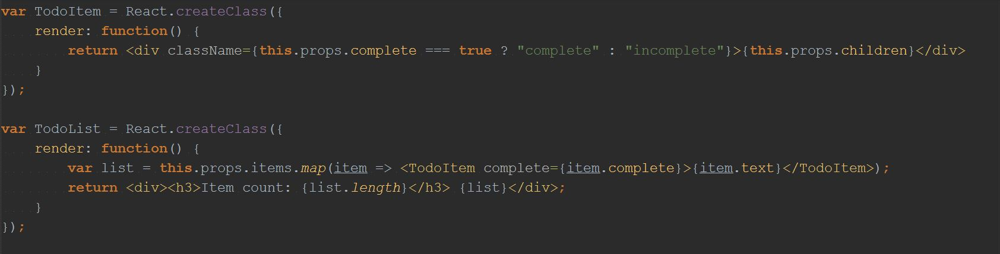
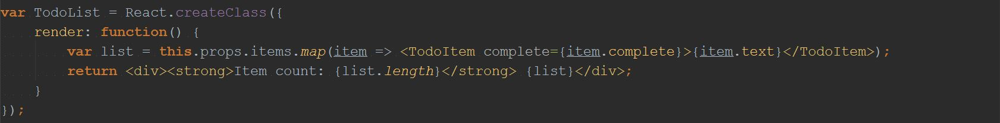
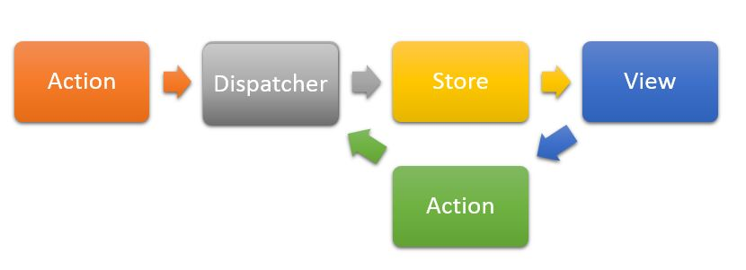
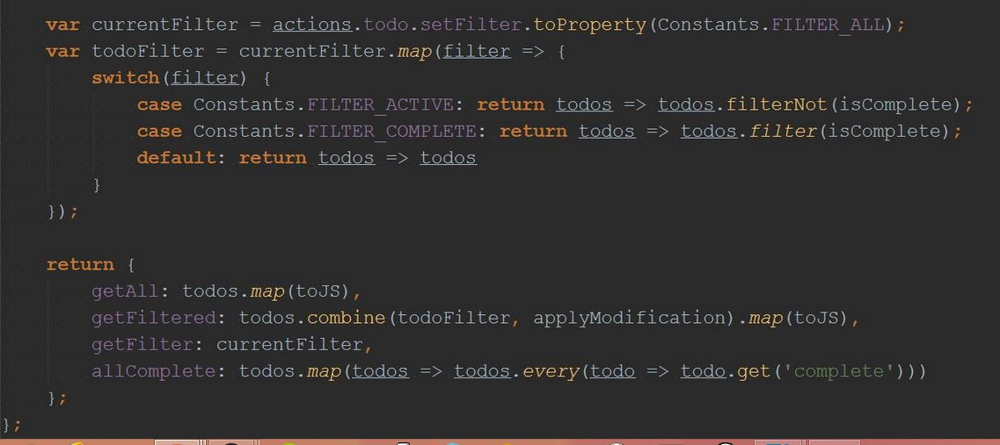

Reactive rendering
Using React + Flux with Bacon
Agenda
- React
- Flux
- React & Flux w/ Bacon
- Demos
React
A JavaScript library for building user interfaces.
Who uses it?
- Yahoo!
- Airbnb
- Github (atom.io)
- Adobe (brackets)
- etc...
React basics
Re-render the whole application on each state change
- Simple, predictable and declarative - easy to express how the application should look at any given point in time
Create components, not templates
- Highly cohesive modules loosely coupled with other components
- Encapsulation makes them easily reusable, composable and unit testable
- Web components aim to fix the same problems as React components, but approach it a lot differently
Example

JSX
- A JavaScript syntax extension that let's you use HTML-like syntax
- Completely optional
- Provides optional ES6 syntax support (arrows functions, destructuring assignment, rest parameter etc.)
- Can be used to compile statically-typed Flow code to valid JavaScript
JSX vs. vanilla JavaScript

Virtual DOM
An object tree representation of the DOM
Why?
- Deleting and creating the DOM on every update is too expensive
- You would lose scroll position, form state, make CSS animations impossible, etc.
Solution
On every update, React:
- builds a new Virtual DOM tree
- diffs the new tree with the previous
- computes minimal set of mutations needed to get the real DOM up-to-date
- batch executes all the updates to the DOM
Event system
React uses a virtual event system as well
- Wraps all DOM events in
SyntheticEventobjects, with the same interface as the native browser event. - Normalizes events to be consistent across all browsers
- Minimizes the number of real event listeners in the DOM by performing event delegation to components itself
Notes
- With the default batching strategy in React, updating state occurs at the end of an event loop
- Your own custom batching strategy can be used, React provides one based on requestAnimationFrame as well.
- Number of performance assistance improvements can be provided if necessary.
- Define if components are pure with PureRenderMixin
- Provide assistance on when a re-render is not necessary with
shouldComponentUpdatemethod
Testing
React.addons.TestUtilsprovides helpful tools for testing components- Can easily be integrated with the test framework of your choice
- Easily simulate events with your components
React.addons.TestUtils.Simulate.change(node, {target: {value: 'Hello, world'}});Animation
React provides two addon components for animation
ReactTransitionGroup- low level API for animationReactCSSTransitionGroup- high level API for easy CSS animations and transitions
Example

Useful React tools
Flux
Application architecture for building user interfaces
Unidirectional data flow
Unidirectional data flow

General ideas
- You can get the full state at any given time
- It doesn't give updates of what changed, but informs you that something changed
- Decouples store dependencies through event handlers
Dispatcher
- Central hub that manages all data flow in Flux applications
- pub/sub system - action creators publish, stores subscribe
- Can be implemented with for example Node.js EventEmitter
- ...or use a ready implementation, such as
require('flux').Dispatcher
- ...or use a ready implementation, such as
Stores
- Contains the data and application logic for a specific domain
- Subscribes to actions that are relevant to it
- Emits a change event when something changes
- Have no public setters, just getters
- Have no idea how the data should be displayed
Views
- Register to be notified when specific stores update
- Always fetches whole state from stores
- Have no idea how the data should be updated/managed
- Have component logic, but no application logic
The benefits
- Clear separation of concern, low coupling - high cohesion
- Application logic independent from views
- Easier to test both stores and views
Implementations
- fluxxor
- Dispatchr
- Reflux
- McFly
- DeLorean
- etc...
React + Flux with Bacon.js
Basics (short version)
- Replace dispatcher with Bacon stream(s)
- Subscribe views to store streams (use mixins)
- ...profit?
Basics (long version)
Where should streams originate from?
As static properties of components?

Within seperate action creators?

Stores subscribe and update data...

...and expose filtered / mapped views of it
Views subscribe to store streams